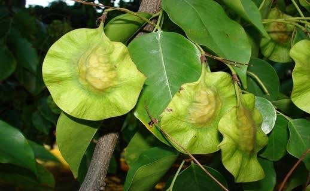

Beejaka – Pterocarpus marsupium

Asana, Beejaka, Vijaysar, Indian Kino tree are different names for Pterocarpus marsupium. It is extensively used for the treatment of diabetes, obesity, diarrhea, vitiligo, eczema, psoriasis etc, in Ayurveda.
Botanical name: Pterocarpus marsupium
Family: Fabaceae (Simbi kula / Aparajita upakula)
Vernacular names
Names in different languages:
- Hindi name: Vijayasara, Vijaysar, Beejasaar, Beejsar, Bij Sar
- English name: Indian Kino tree, Malabar Kino tree
- Tamil name: Vegai, Venga katal
- Telugu name: Vegisa, Peddagi
- Malayalam name: Venga
- Kannada name: Banga, Bange mara
- Bengali name: Peetashal, Piyasal
- Marathi name: Vivala, Bibala
- Gujarati name: Biyo
- Oriya name: Piashala
- Urdu name: Bijasar
Properties, Part Used, Dosage
Vijaysar Medicinal Properties:
- Guna (qualities): Laghu – light to digest, Ruksha – dry
- Rasa (taste): Kashaya – astringent, Tikta – bitter
- Vipaka: Katu – Undergoes pungent taste conversion after digestion
- Veerya: Sheeta – Coolant
Effect on Tridosha: Balances Kapha and Pitta Dosha.
Part used: Heart-wood, exudate resin
Heartwood is the main usable part of the bark and seeds are also used with little lesser benefits.
Dosage: Decoction 50-100ml; powder 3-6 g
Pharmacological Action
Astringent, Anthelmintic, Blood purifier
Uses, Indications
Pterocarpus marsupium uses:
- Keshya – Improves hair strength, promotes hair growth
- Medohara – reduces fat and cholesterol levels
- Rasayana – anti aging, causes cell and tissue rejuvenation
Habitat, Characteristics
Habitat: Hilly regions of Gujarat, Madhya Pradesh, UP, Bihar. The trees are found in large quantity in South Indian states like Karnataka, Kerala, Tamil Nadu, and Odisha. The tree has been cultivated in recent years.
Macroscopical characters of Bark:
- It is a large deciduous tree.
- Bark is thick, gray with vertical cracks.
- Wood is very hard, yellowish brown with darker streaks.
- When wood is soaked in water, water turns blue in color.
Microscopical characters:
- Vessels are medium in size.
- It is diffuse porous wood.
- Ray parenchyma cells are uni to triseriate which are very small in size.
- Procumbent and upright cells have been observed in R.L.S.
Morphology
- Leaves: Compound, imparipinnate, oblong to obtuse glabrous on both surface
- Flower: Pale yellow
- Fruit: Pod, nearly circular, glabrous
Chemical Composition
Pterocarpus marsupium chemical composition:
- Pterocarpol, Marsupol, Maesupin, Carpusin (Marsupsin), (-) epicatechin, Propterol, Pterosupin, Marsupinol, Lupeol.
- Resin contains Kino tannic acid, Pyro catechin, epicatechin.
- Kino tannic acid is found in heartwood.
- Water Soluble Extractive: Not less than 5.00%
Sanskrit Synonyms
Asana, Beejaka, Pitasara – Heartwood of Bijaka is yellow in color
Pitasalaka – Heartwood resembles Sala (Shorea robusta) heartwood.
Sugandi – Flowers are aromatic
Karsya – Bijaka is emaciating
Classical Categorisation
Susruta: Salaasaradi gna
Vabhata: Asanadi Gana
Kaiyadeva Nighantu: Oshadhi Varga
Dhanvantari Nighantu: Amradi Varga
Bhavaprakasha: Vatadi Varga
Rajanighantu: Prabhadradi Varga
Sthanika Karma (Systemic Action)
External Application: It has Anti-inflammatory, fracture healing properties. Promote hair growth. Leaf paste can be applied in skin disorders like urticaria, Leukoderma etc. Oil prepared out of it is beneficial in premature graying of hair. Gum can be chewed in the toothache.
Indicated in:
- Raktapitta – Bleeding disorders such as nasal bleeding, heavy periods, etc
- Krumi – worm infestation
- Visarpa – herpes
- Kushta – skin diseases
- Shvitra – leucoderma, vitiligo
- Meha – diabetes, urinary tract disorders
- Gala Dosha – throat disorders
- Raktamandala – ringworm infection
Beejaka Flowers
Madhura – sweet
Tikta – bitter
Pachaniya – digestive
Vatala – increases Vata Dosha
Ayurveda Medicines
Ayurveda medicines with Beejaka as ingredient:
- Asana manjishtadi taila – It is an Ayurveda medicine, used mainly in the treatment of headache and eye disorders.
- Asana eladi taila – a traditional herbal oil, used in the Ayurveda treatment of headache, ear and eye diseases
- Asana Vilwadi taila – in Ayurveda oil used in the treatment of diseases related to eyes, ear and headache.
- Narasimha Rasayan – used for the treatment of weakness, weight gain, hair growth, and rejuvenation.